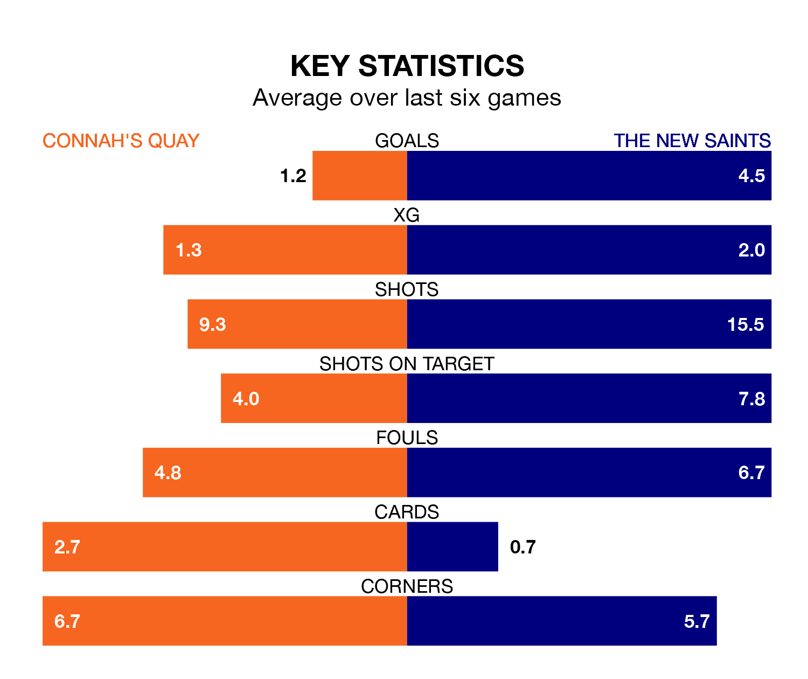

Connah's Quay host The New Saints in Friday's late match at the Essity Stadium looking to bounce back from defeat last time out in the Welsh Premier League.
The Nomads, who sit second in the league after 26 games, fell to a 1-0 away defeat to Bala Town on March 1.
They face a The New Saints side who picked up a win in their last match, a 4-0 victory against Cardiff Met, and who sit first in the table.
With 93 goals in 26 games so far this season, The New Saints are the league's highest scorers with 3.6 goals per game. And they are conceding fewer than average, letting in 15 goals at a rate of 0.6 per game.
Connah's Quay are also above average scorers, with 2.5 goals per game, compared to a league average of 1.5. They have conceded 1.3 goals per game.
The Nomads are in mixed form in the Welsh Premier League, with three wins and a draw from their last six games.
With six wins and no losses over that period, the Saints' form is much better – they have taken 18 points from 18, compared to the home team's 10.
In the last 10 years, Connah's Quay and The New Saints have played each other on 35 occasions. Connah's Quay won seven of them, The New Saints 21, and they drew seven times.
On average, the Nomads scored 0.8 goals and the Saints 1.8 in those matches.
Their last meeting was on December 31, when The New Saints won 4-0 away.
Updated: 09:34 (UTC), 08/03/24